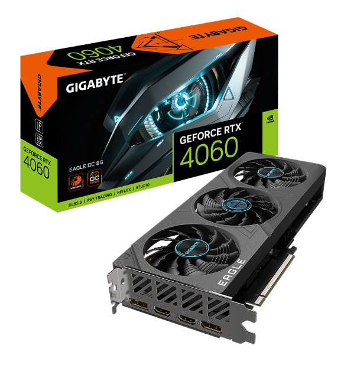
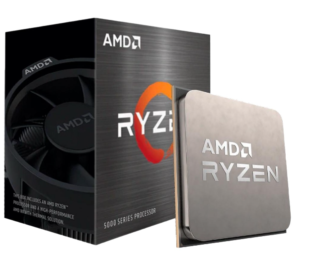

SEJA BEM VINDO(A)!
SEJA BEM VINDO(A)!
GAMER REDRAGON WIDELOAD LITE, MID-TOWER, LATERAL DE VIDRO, BRANCO, CA-604W

Marca: Redragon
Modelo: CA-604W
Características: Design simples e minimalista para complementar qualquer setup.
Janela lateral e frontal em vidro.
Conexão USB 3.0 no painel frontal possibilitando transferências de alta velocidade.
Formato: Mid Tower
Materiais: Aço SGCC e vidro temperado
Janela lateral: Vidro temperado
Cor: Branco
Placa mãe suportada: ATX, Micro-ATX
Slots de expansão: 6
Baias: 2 x 2.5"
2 x 3.5"
Entradas: 1 x USB 3.0
1 x USB 2.0
HD Áudio
Ventoinhas suportadas:
Superior: 3 x 120 mm ou 2 x 140 mm
Painel da placa mãe: 2 x 120 mm
Traseira: 1 x 120 mm ou 1 x 140 mm
Tampa inferior: 3 x 120 mm ou 2 x 140 mm
Water cooler suportado:
Superior: Até 360 mm
Painel da Placa mãe: Até 240mm
Tampa inferior: Até 360 mm
Comprimento máximo da placa de video: 395 mm
Altura máxima do cooler da CPU: 175 mm
Dimensões: 514 x 378 x 446 mm
Notas: *Este produto não acompanha fans.
Placa de video Gigabyte NVIDIA GeForce RTX 4060 EAGLE OC, 8GB, GDDR6, DLSS, Ray Tracing, GV-N4060EAGLE OC-8GD
Marca: Gigabyte
Modelo: GV-N4060EAGLE OC-8GD
Graphics Processing: GeForce RTX™ 4060
Core Clock: 2505 MHz (Reference card: 2460 MHz)
CUDA Cores: 3072
Memory Clock: 17 Gbps
Memory Size: 8 GB
Memory Type: GDDR6
Memory Bus: 128 bit
Card Bus: PCI-E 4.0
Digital max resolution: 7680x4320
Multi-view: 4
Card size: L=272 W=115 H=40 mm
PCB Form: ATX
DirectX: 12 Ultimate
OpenGL: 4.6
Power Connectors: 8 Pin*1
Output: DisplayPort 1.4a \*2 HDMI 2.1a \*2
Processador AMD Ryzen 7 5700X 3.4GHz (4.6GHz Turbo), 8-Cores 16-Threads, AM4, Sem Cooler, 100-100000926WOF
Marca: AMD
Modelo: 100-100000926WOF
Cores: 8
Threads: 16
Clock base: 3.4 GHz
Clock Max Turbo: 4.6 GHz
Cache L2: 4MB
Cache L3: 32MB
TDP: 65W
CMOS: TSMC 7nm FinFET
Marca: AMD
Modelo: 100-100000926WOF
Cores: 8
Threads: 16
Clock base: 3.4 GHz
Clock Max Turbo: 4.6 GHz
Cache L2: 4MB
Cache L3: 32MB
TDP: 65W
CMOS: TSMC 7nm FinFET
Marca: AMD
Modelo: 100-100000926WOF
Cores: 8
Threads: 16
Clock base: 3.4 GHz
Clock Max Turbo: 4.6 GHz
Cache L2: 4MB
Cache L3: 32MB
TDP: 65W
CMOS: TSMC 7nm FinFET
Marca: AMD
Modelo: 100-100000926WOF
Cores: 8
Threads: 16
Clock base: 3.4 GHz
Clock Max Turbo: 4.6 GHz
Cache L2: 4MB
Cache L3: 32MB
TDP: 65W
CMOS: TSMC 7nm FinFET